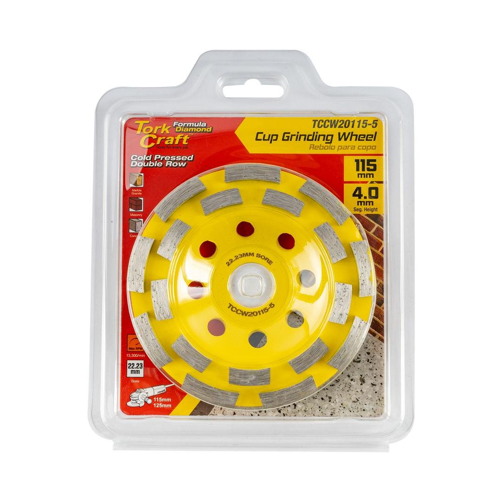
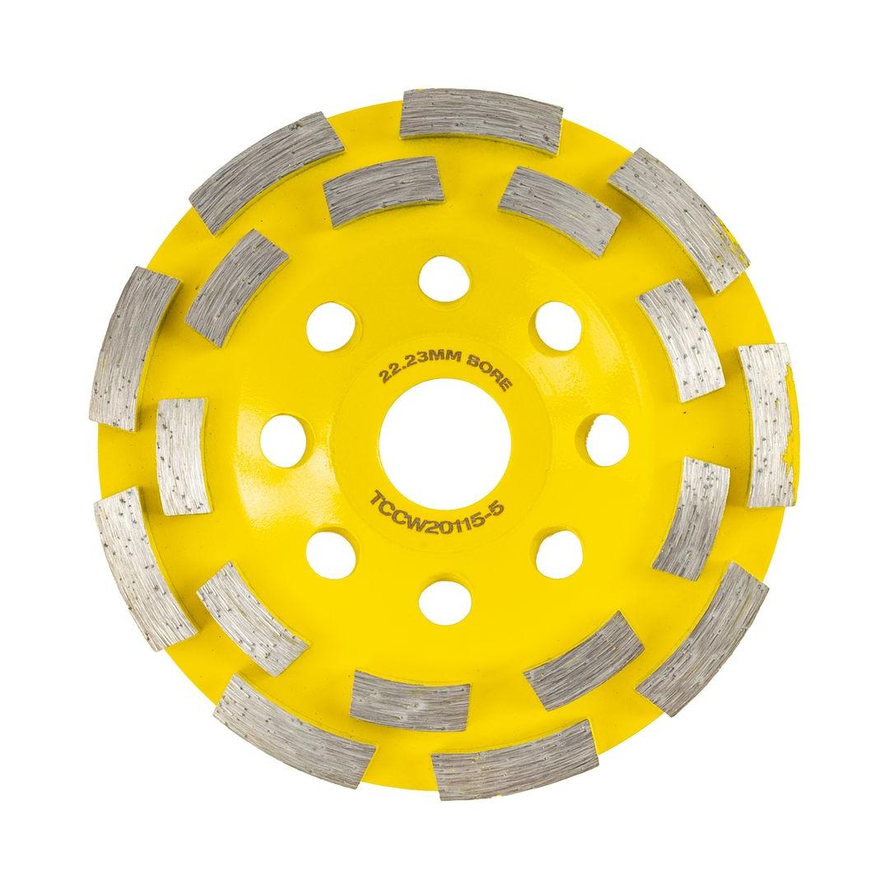

TCCW20115-5


Cup Diameter: 115mm
Arbor: 22.23mm
Max RPM: 13 300
Segment Configuration: Double Row
Classification: Yellow (Standard)
This cold-pressed, double-row diamond cup wheel is an economical and versatile tool designed for surface grinding and finishing. Measuring 115mm in diameter with a 22.23mm bore, it is compatible with most standard angle grinders. The double-row segment design ensures efficient material removal and a smooth finish on a variety of masonry and concrete surfaces, including stone, mortar, and brick. Its robust construction and aggressive grinding action make it ideal for professional contractors and DIY enthusiasts alike who require a reliable and affordable tool for leveling uneven surfaces, removing coatings, and preparing floors for new installations.
Application: